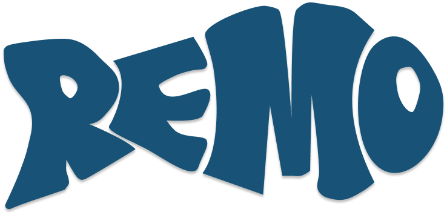

LAB · 프로토타입 · 사이트에 연결되지 않음
로고가 부풀고, 관계가 맞물린다.
브랜드 가이드 v4의 두 폴(소프트·글로시)과 관계 맵 데이터를 3D로 옮긴 실험입니다. 마우스나 손가락으로 움직여 보세요.
풍선 로고
3D를 불러올 수 없어 정적 로고를 보여 드립니다.

소프트 · 주황 · 종이
글로시 · 블루 · 어둠
REMO OS · 구성원 10명 자기보고, 2026년 9월 기준
이름 없이 관계만 만진다.
3D를 불러올 수 없습니다.
같이 하면 강해지는
서로 메워주는
손발이 맞는